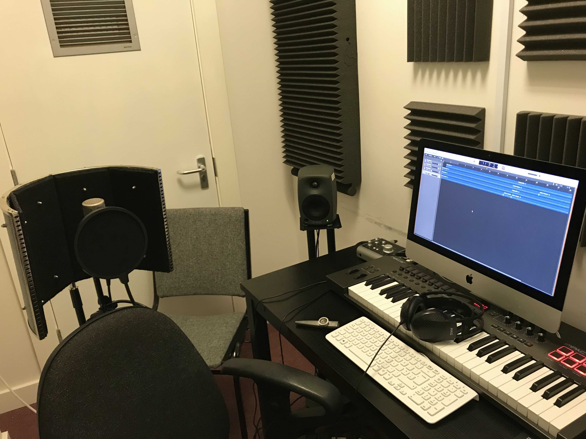

My first album of original songs, recorded over the 2020 lockdown.
I started writing out and recording various lyrics and instrumentals while on holiday in America in 2018. By 2020, several of these ideas had coalesced into songs. This was helped along by my time at sixth form, where I had the time and resources to practice writing. I did so most days, and eventually ended up with a few ideas I really liked. I incorporated these into the composition module of my Music Performance BTEC, and then took them further over lockdown, in which time I wrote and recorded the rest of the songs on the album.
Writing took place chiefly in two places: the small recording booths at sixth form, or the walk between there and home. I'd set looped backing parts going in Logic Pro, and jam over the top of them for hours. Then I'd hum the best melodies and chord sequences to myself on the walk, and start putting words in based on how I was feeling. A little over half the album was written this way, with Stars (Oh Cosmos) having started life earlier as a very short America 2018 demo, and some other songs (Leaving Home, On The Aftermath) coming out of the blue almost all at once.
Some of the songs went in different directions than I'd originally planned. I'd abandoned Incoming, Hello World and Stars (Oh Cosmos) because I felt they weren't heading anywhere interesting. You can hear this quite clearly in the final songs; Stars alternates only between G and Cm until the first chorus, which only finally came to me two years after the opening section. Hello World similarly keeps mostly to F#m until the after the chorus section, where it moves to a more interesting chord sequence and some lovely harmonies. Incoming is different; I wanted it to stay in the same melodic space, but gradually build up to a massive sound at the end, mirroring the scale of the protests it described. I couldn't get the build I wanted just with my instruments and vocals, so I added layers of audio from the 2019 Extinction Rebellion protests in London. The 'climate justice now' recording at the very end is one I took personally.
Recording was done firstly in the recording booths at sixth form. All instruments were MIDI at this stage, apart from my vocals, which were recorded quickly and without thought for quality, just as long as they were good enough to get the idea down before I forgot it. Lots of the arrangement was instinctive, based on the sounds in my head but without any formal planning. Piano sounds would often go on first because I was comfortable on that instrument. Then drums and bass, to make it sound like a band was playing. The original piano was often replaced with other synths or ePiano sounds after some time although the basic part often remained mostly intact. A guide vocal would be recorded to serve as a scaffold for the harmonies that would follow, and then I'd try to leave the song alone for a little bit, so that I didn't get tired of it. Occasionally on coming back to a song, I'd change some chords, words or structural elements, most dramatically with the examples I mentioned earlier.
Once the basic tracks were recorded, I set about improving the quality of the sound via refinement of the parts, re-recording the vocals, and getting some help from other musicians. I asked my Music Performance classmate Matthew Hilling for help with rhythm guitar on a few tracks, which was added pretty deep in the mix to create variety in the textures. His contributions are most audible in Incoming. My brother Stanley added guitar to every other song which features the instrument (Hello World, Your Magic Has Gone Away and On The Aftermath). These guitar parts were mostly played as written by me, but the solos at the end of Hello World are all his own. The songs Stars (Oh Cosmos) and (They Leave A Mark) Wherever You Go feature wonderful cello playing from Dustin Dicely, who I connected with over the subreddit r/TheRedditSymphony (well worth checking out). The latter track also features u/crojohnson on the violin. Some of the string parts are supplemented with a MIDI pad voice. The only other people to credit are the staff of the music department at Farnborough College 6th Form- specifically my Music Performance BTEC teacher Caroline Hordley (who gave me a shedload of useful feedback while I was developing the tracks), and Maisie Richards, who did some mixing on Hello World and gave me some advice which I didn't fully understand or apply at the time.
Once everything was recorded, I spent a while mixing the songs and adding final touches, including some synth work on On The Aftermath, utilising the Roland JD-Xi synthesiser that I'd got many years earlier and never really used properly. Mixing was a challenge, as I had no formal knowledge and was relying on what sounded good through my open-back, underpowered headphones. I ended up turning the bass up way too much to compensate, and had to adjust it to saner levels after a listen through some generic earpods. I did a car test; it went pretty poorly, as the sound seemed to change a lot depending on where I was in the car, and not matter what I adjusted, didn't sound good. I considered putting a note on the album cover to the tune of 'listen with this specific pair of headphones or it'll sound awful'... Little did I know at the time that the album sounds pretty badly mixed even through those exact headphones. I guess I just had ear fatigue.
I didn't make any 'proper' videos for the album. This can be attributed to a lack of both time and effort; videos are a pain to shoot and edit, and the music is the important bit. I instead tried to make visualiser-style videos. These were easier and faster to record and edit, and meant I didn't have to lip-sync in them.
I created 'cover art' for each song. I didn't expect them to need it for an physical packaging, but they were good for thumbnails. The laziest of the videos simply featured the cover art, with some panning and minor video effects. My favourite cover art has to be the image for Your Magic Has Gone Away- incorporating the sun's rainbow into a drawing feels like something to expand upon at some point. The higher-effort videos featured some actual planning- Incoming showed pictures of XR protests (all taken from their newsletters) gradually becoming more sepia toned, as if the life was being sucked out of them. Wherever You Go shows a tea candle burning, for obvious reasons. IHICFMC has the screen gradually fill with numbers, until the very end of the song when the final digit is printed (this was a screen recording of IDLE printing a random digit sans newline on a while True loop).
Stars had a whole set made for it (out of a cardboard box on my bedroom floor), giving us the point of view of some remote craft monitoring the Earth over the years. The blinking lights in that video were controlled by a Python script on a Raspberry Pi. The small screen was my phone, the large screen was hooked up to my laptop, and the MIDI keyboard is the one I used to record quite a bit of the album. Leaving Home has the most elaborate video, with each scene drawn on paper, scanned in, and animated in Keynote (Apple's PowerPoint). I hadn't learnt to export Keynote slides directly as video files at that point, so it's a screen recording (causing the limited resolution and dropped frames).
Hello World was going to have a full video, as the 'single' from the album. The plan was to flash between various examples of people trying and failing to attain fame online, with some of the people featured lip-syncing to the song. Unfortunately, I couldn't get enough people to play the wannabe influencers in the limited time I had before I wanted to release the album (2020-09-01), so I replaced it with the basic video it has. Oh well...
I used CDBaby to release the album. It's the first thing I put on streaming services, if I remember correctly, and it was an interesting path to navigate for the first time without guidance (other than YouTube videos of dubious credibility). Either way, it's out there now.
This project was the first time I tried recording the piano with a mic on either side, recording simultaneously. I'd previously done one mic at a time over two different takes with pretty good results, but I wanted to do it properly for the album. Luckily, my sixth form's music department had upgraded it's recording equipment fairly recently, and they were selling MIDI controllers and interfaces at student-friendly prices. I picked up one of each, which both served me well (and occasionally still do) through several projects. The sound I got from recording the piano like this was pretty cool, especially when hard-panning the mics. With some EQing and compression, I'd shut my eyes and feel like I was inside the piano as it was playing- very exciting.
I took this a step further for Hello World, and managed to get some time in my sixth form's recording studio, in which I re-recorded the song's piano part using their in-tune piano and much better mics. I felt totally unworthy of the lovely equipment while hammering out the basic chords of my rock song, but it sounded pretty good.
My ukulele playing on this is pretty horrible, as I was fairly inexperienced with the instrument at the time. In some cases, I'd play every other chord in one take, using the gaps to switch chord because I wasn't fast enough to do it in real time. Then, I'd do another take to get all the chords I missed. I also occasionally pitched shifted the uke down an octave and mixed it to about 30% wet, with the intention of getting a deeper, more guitar-like sound. This didn't work as intended, but did sound kind of interesting.
I'm pretty happy with most of the core ideas of the songs, but the execution leaves a lot to be desired. Some of the vocals are in keys which don't suit my voice very well, such as Stars and On The Aftermath. The mixing is pretty bad; the main vocals in particular are way too loud compared to the instruments, the sound is often muddy, and I can hear some of the cuts.
I feel like what the songs really lack is experience. To explain that, take the debut albums by bands such as Oasis, DEVO, and Talking Heads. These bands had been gigging around for years before getting a record deal, and had refined their songs over time, based on audience feedback, experimentation, and simply living with the songs for a while. They got to the point where they knew exactly what their best songs were, and how people liked to hear them. By the time they got to the studio, they were tight groups with a solidified image and approach to playing their tunes, which I believe is what makes their debut albums so good.
Mine, on the other hand, is like Bambi's first shaky steps; the songs haven't had time to mature, haven't been road tested. I had precious little experience working on a project of this size (only one kazoo album, which was a different sort of deal), and even less with my own material. I had no idea how I wanted to present myself, or what I was presenting. Since releasing the album, I've had the opportunity to play some of the songs from it to crowds at open mic events. I've had to rearrange them for a one-man-band, and I've changed some keys to make them easier to play on the ukulele (much easier to bring to these events than a keyboard). I've modified melodic phrases and dropped bits that drag, or that I don't like anymore. Most of these changes have been recieved well, and so I've kept them. If I were to record the album from scratch now, I believe it'd be more listenable, cohesive, and engaging. Maybe someday I will.
YouTube, all streaming services. If you meet me in person and I've got a rucksack, there's probably a CD copy of the album in there... just ask.